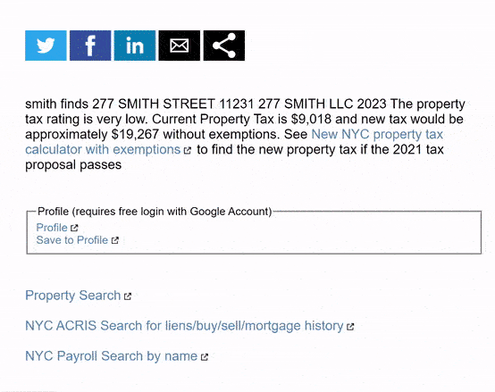
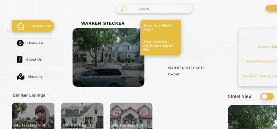
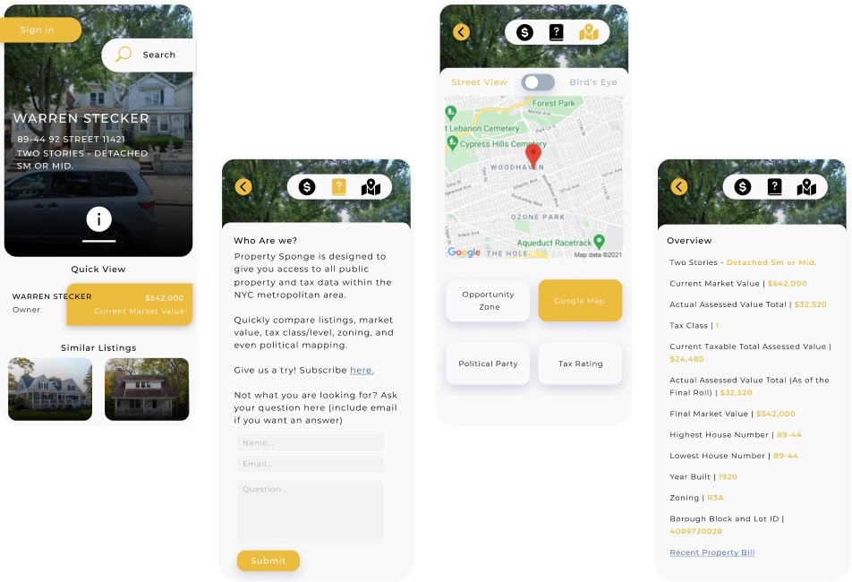
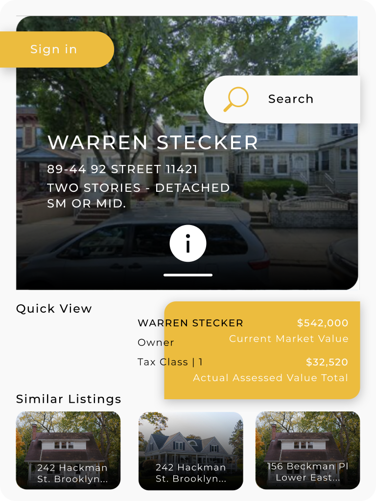
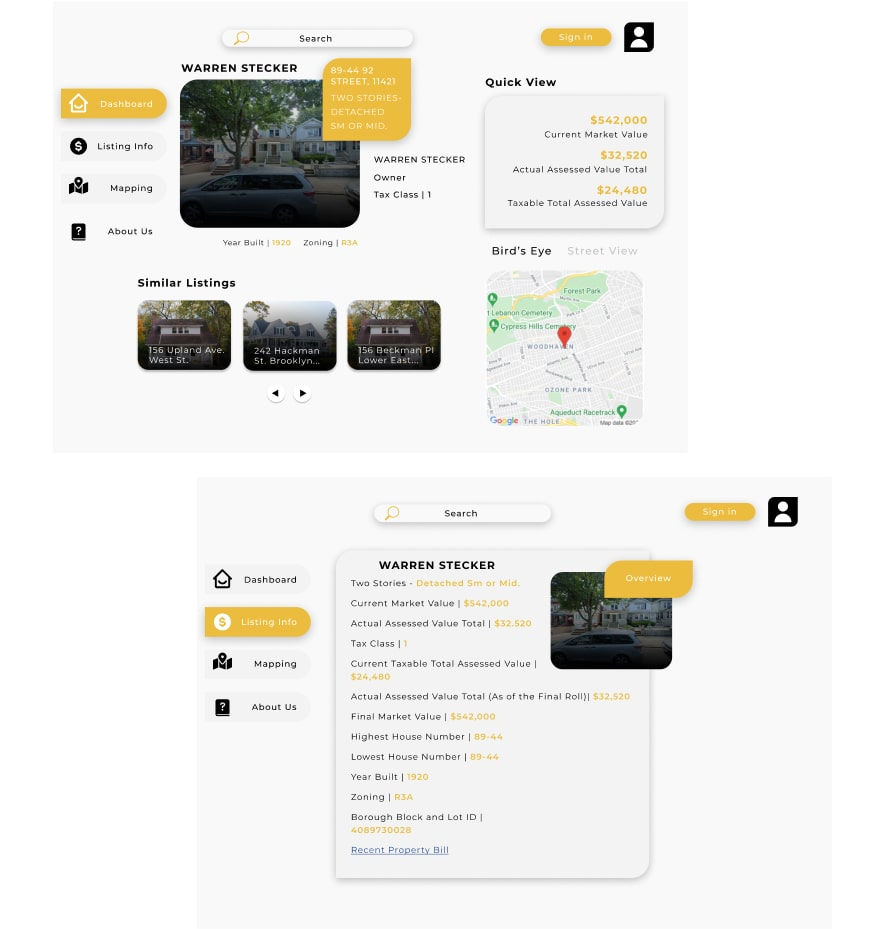

About
Property Sponge is a fledgling startup that presents useful metrics of properties in NYC. It gives owners, buyers, and real estate professionals quick and easy access to NYC public data regarding housing, market value, and more.
Position: Design Consultant
Length: 2 Months
Tasks: Logo Design, information hierarchy improvements, responsive and coded UI
Property Sponge is a fledgling startup that presents useful metrics of properties in NYC. It gives owners, buyers, and real estate professionals quick and easy access to NYC public data regarding housing, market value, and more.

Creating a logo and loose styleguide was an important first step in capturing a brand identity for the future UI, as well as making the site approachable at large.
This logo is a symbolic link to a user’s new home/property aspiration.

After 3 interviews with founders and members of the real estate industry, we distilled the weighted importance of data and presented it in 4 major categories (toggled). We also listed the sub-data of each category hierarchically according to average relevance. Key indicators were showcased on the central dashboard via quick view, the default page load.
I utilized progressive disclosure so all information is readily accessible to the user but limited unless the user selects an area of interest.
Categories | Dashboard, Overview, About Us, Mapping .

I started with a mobile first design since the product will most likely be accessed via mobile app, due to its nature as a timely preview of properties. From the onset, users are presented with a dashboard 'quick view'.

For a deeper dive, users may press on the information or 'i' button, in order to open the toggle menu. Users may view a compilation of scraped public housing data related to their search query. Users may also toggle 4 different mapping components of the related region. I've also included a project information page with a signup CTA to onboard new users.

The Tablet design functions identically to mobile via an optional information button and a default quick view. The primary difference between the two is that the extra viewport allows a greater number of similar listings and corresponding data to be showcased above the fold.

While the design is mobile centric, desktop offers the greatest breadth of information in a single viewing, as shown on the user dashboard page.
These designs culminated into a fully responsive front-end UI, which is available to test. I established 3 major breakpoints based on my final designs and developed the corresponding interactions in JS.
Designed in Figma, coded in HTML, CSS, Vanilla JS. Delivered a responsive front-end the team used as their build spec.
Since bringing the prototype in-house, I've wired it up to real NYC data: search any NYC address to pull its actual public tax and assessment record, view live satellite and street-level imagery of the property, and see real Opportunity Zone, tax class, and City Council district overlays.